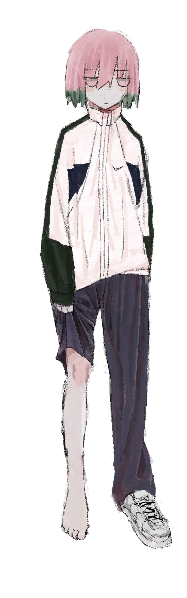
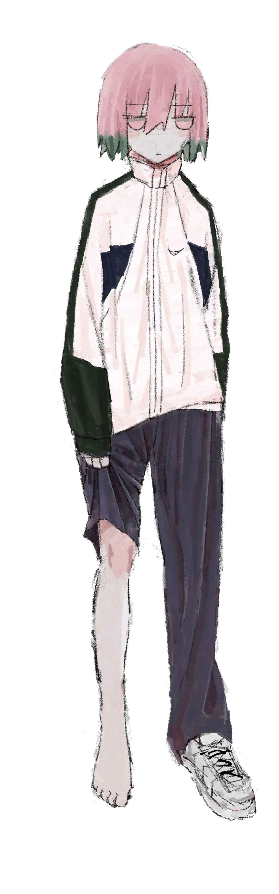

Slanted eyes and pale white skin. Ethan turns towards the camera, "you know I came from very humble beginnings, my father sometimes only made 300k a month. My first house was some shack in greater Singapore". The interviewer (a very attractive asian woman with d cup tits) perks up and looks directly towards the prince of Jasin
"Wow, that must've been tough, how did you manage?"
"A single day at a time, my mother (another very attractive asian woman with d, maybe e cup, tits) tried her best. It was thanks to the tenants of capitalism, where hard work and tenacity persevere, that I now enjoy my current lifestyle."
"What a bold statement Ethan, can I call you Yi-Hern hehe?"
"no"
"ok, anyway, since you're such an ardent defender of free market capitalism, it must pain you to hear of the rumours of your connection with Xiaxi Cai"
"I have literally never met that man in my entire life."
"There are pictures of you two together." The interviewer presents a picture of Xiaxi and Ethan seig-heiling at some sort of leaving party.
"Wow, just wow, I can't believe the levels of systemic racism OUR people face, this is simply a random asian guy, this isn't THE Xiaxi Cai. White people see tilted eyes and assume the worst. As a proud asian man I am offended"
"Right on brother" The interviewer says in the tone of a man dying of tuberculosis. She continues "Regardless these rumours have put a significant damper on your campaign for prime minister”.
"Like all rumours, they subside eventually, I trust in our team and our party line to carry us through the primaries" Ethan says with a slight uneasiness in his voice.
The interviewer turns towards the camera, her tits taking up most of the frame.
"You heard it here first folks, this is BBC with Ethan Saw and this is the end of the interview, uhh, cut, end the interview, can somebody stop the cameras rolling, guys, it's my first day on the job, someone, CUT"
Ethan stands up and shakes her hand before slipping his hotel keycard in-between her uneven bra padding. She looks slightly offended but nonetheless invites Ethan downstairs to the bar. His face turns a pale red as he informs her that he has an urgent, un-movable, appointment later tonight. He then takes off into an Olympic sprint and gets into the backseat of his car. His driver is playing a hentai phone game and doesn't notice Ethan panting (not because of the running but because he was nervous around those ginormous tits, Ethan is a very physically capable man). After about 3 minutes, the driver asks Ethan where he wants to go.
They arrive at the hospital at midnight. These white walls always dull the senses after a while. Death, grief, illness stay trapped here without reprieve. It's too much for the senses to handle, the brain dulls itself as a subconscious coping mechanism. He opens a door to find Nadya tucked in, the TV is switched on.
"I saw your interview, you were brilliant as always, sweetie" Nadya says in her patented Malaysia accent.
"Twank You" Ethan says in his patented baby voice.
"Did you think the interviewer was attractive by the way?"
"I don't think so, I wasn't really paying attention to her haha" Ethan says in the tone of a cornered animal.
"Good. I'm getting ready to wrap up”.
"I'm sorry, I wish I could've made it earlier, but you have no idea, it's interview after interview, it never stops, and some fucking bullshit always comes up. Now I have to deal with this Xiaxi shit, who even leaked that, I bet it was that insect Arda, what a fucking bit-"
Ethan stops mid-sentence when Nadya quickly grabs his hand.
"The doctors gave me some news today."
"What is it Nadya darling?"
"Its about how much time I have left
“You have until Summer, I know that”
“Why Summer ethan?”
“they say you die in your favourite season. Minjun loved winter, so he died in December. You love summer, so you can’t die now.”
“Sometimes, When I close my eyes, I imagine him walking through the frosted air in that dumb fucking orange jacket, past the BETFRED and the arab electronics shop, finally stopping at subway. He loved that garbage”.
At this point Nadya didn't have a strand of hair left, it was treatment after treatment, doctor after doctor. Nobody has the answer, only more things to try. To Ethan, she was as beautiful as the day they first met, plus she still had her d-cup titties, which Ethan valued highly.
From the first month they knew they loved each other. They eloped when they were only 21, for 4 short years they lived in bliss, but the coughing started, coughing turned to hospital visits and visits turned into stays. They always said that they would make it through this, but doubt clouded both of their minds. Nadya had accepted it, Ethan never could, he was far too fragile. He loved her, more than life itself.
"So, how much are they saying, a month? less?"
Nadya opens her mouth, but the next thing Ethan remembers is waking up in his bed, alone.
 
